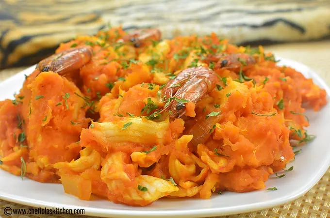

Yam-Porridge recipe

An image of a yam porridge
Yam porridge is a delicious yam recipe cooked in a well-seasoned pepper mix. It is very quick and easy to make.
Ingredients
- 5 Thick slices of yam
- 3 Cups of water
- 3 tbsp. Crayfish
- 3 tbsp.Palm oil
- 1 tbsp. salt
- 1 tbsp. Seasoning
- 1 tbsp. Thyme
- 1 tbsp. Curry
Steps
- Cut yam into cubes and wash
- put into pot, add water and boil for 10 minutes
- Add crayfish, salt, seasoning, palm oil, peppers, curry, thyme, and cook for 15 minutes.
- Add vegetables and cook dor 1 minute
Back to Top
Back to Recipes